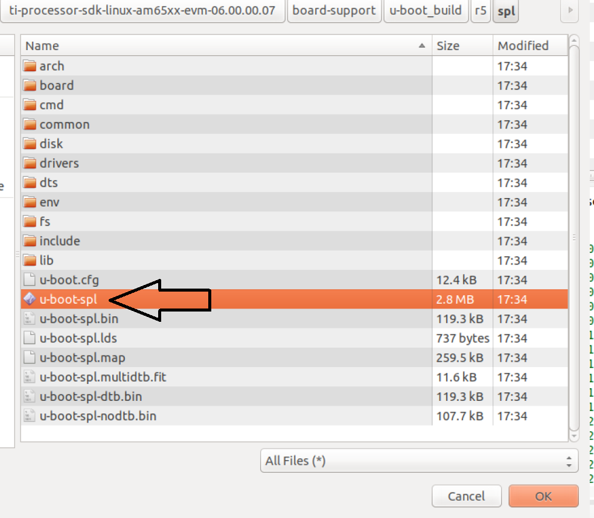
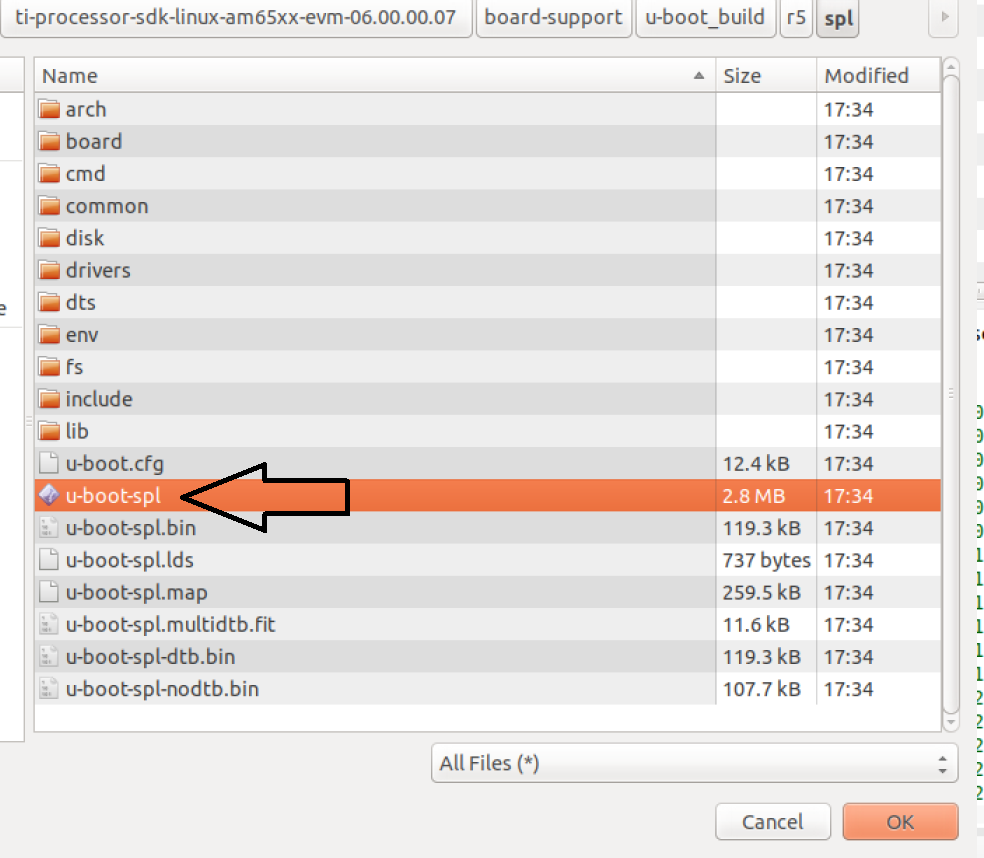

3.1.2.2. Debugging SPL in CCS¶
The following section demonstrates how to connect a board to CCS and load the SPL symbols for debugging. For the experiment below, users are expected to boot their board from a SD card.
3.1.2.2.1. Step 1: Downloading CCS¶
- Please download the CCS from the following link: http://software-dl.ti.com/ccs/esd/documents/ccs_downloads.html
NOTE: We will be building Uboot on a Linux machine and it is recommended to install CCS on the same operating system (OS). If CCS is not installed on the same OS, CCS will not be able to locate the code files. Please follow the Linux instructions on the following link: http://software-dl.ti.com/ccs/esd/documents/ccs_linux_host_support.html
3.1.2.2.2. Step 2: Creating a Target Configuration File¶
The first step is to create a target configuration file in CCS. Navigate to “View”-> “Target Configurations”:

Right click on the “Target Configurations” window and select “New Target Configuration”:

Create a name for target configuration:
Select the appropriate SoC and JTAG. Note: If we select the SoC name, the GEL files will not be loaded. However, if we select the board options, the GEL files will be loaded by default. In the below example, if GPEVM_AM65x or IDK_AM65x is selected, the GEL files are automatically enabled in the configuration. While debugging Uboot, it is recommended to avoid GEL files because Uboot is responsible for initializing the peripherals:
Next, click save and test connection to ensure CCS is able to communicate with the debugger:
3.1.2.2.3. Step 3: Loading Symbol files¶
Before the symbols are loaded, a test code will be added to the SPL code. The test code will loop within itself and the only way to break the loop is to change the Program Counter via the CCS. For the current experiment, the AM65EVM is used but the same experiment could be performed on other boards. The following test code is added to the “board_init_f” function in the file <ti_sdk_dir>/board-support/<u-boot_version>/arch/arm/mach-k3/am6_init.c:
store_boot_index_from_rom();
/* Make all control module registers accessible */
ctrl_mmr_unlock();
asm("test: nop");
asm(" nop");
asm(" b test ");
asm(" nop");
asm(" nop");
setup_am654_navss_northbridge();
If a user is working with AM335x/AM437x/AM57xx, the test code could be added in the “early_system_init” function in the file <ti_sdk_dir>/board-support/<u-boot_version>/arch/arm/mach-omap2/hwinit-common.c. The location of the test code on all platforms will vary based on the section of the SPL we are trying to debug.
There are two methods of compiling Uboot: method1 and method2. Both methods will generate the necessary symbol file required for SPL debugging.
On AM335x/AM437x/AM57xx, the symbol file is located in the following directory “<ti_sdk_dir>/board-support/<u-boot_version>/spl/u-boot-spl”. For AM654x, the symbol file is located in the following directory “<ti_sdk_dir>/board-support/u-boot_build/r5/spl/u-boot-spl”.
After building Uboot, copy the relevant images on the SD card. For AM335x/AM437x/AM57xx, copy MLO and u-boot.img to the SD card. For AM65x, copy sysfw.itb, tiboot3.bin, tispl.bin and u-boot.img to the SD card.
Install the SD card and power on the board.
On CCS, launch the target configuration file created in Step2:
After successful launch, connect to one of the ARM cores. On AM65x, the inital SPL code is executed on the R5 so the user would connect to the R5 core. For the AM335x/AM437/AM57xx, please connect to the A8/A9/A15 core.

After connecting to the core, click on “Run”-> “Load”->”Load Symbols…”:

 

After loading the code, CCS should find the source code file and it should be stuck at the code previously added:

To break out of the loop, change the program counter in the Register Window:

At this point, the user has the ability to step through the SPL code and debug issues in the SPL.
NOTE: On K3 family of devices such as AM654x, a watchdog timer part of the DMSC is enabled by default by the ROM bootcode with a timeout of 3 minutes. The watchdog timer is serviced by System Firmware (SYSFW) during normal operation. If one is debugging SPL before the SYSFW is loaded, the watchdog timer will not get serviced automatically and the debug session will reset after 3 minutes. Therefore, it is recommended to start debugging SPL code only after the startup of SYSFW to avoid running into the watchdog timer reset. Similarly, the watchdog timer is also enabled on the AM335x/AM437x/AM57xx devices and please refer to the “Disable_Watchdog()” function in our gel files.